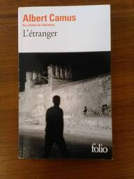
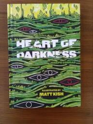

(not my actual reading speed)
Selections from my Bookshelf
- Dante Alighieri:
- La Divina Commedia
- The Divine Comedy
- De Monarchia
- De Vulgari Eloquentia
- Leonid Andreyev - Selected Short Fiction
- Matsuo Basho - The Narrow Road to Oku
- Albert Camus:
- The Fall
- L'Etranger

- The Stranger
- Adolfo Bioy Casares - The Invention of Morel
- Joseph Conrad - Heart of Darkness

- Philip K. Dick:
- Confessions of a Crap Artist
- The Transmigration of Timothy Archer
- Valis
- Fyodor Dostoevsky - The Idiot
- T.S. Eliot - The Wasteland
- William Faulkner:
- Absalom, Absalom!
- As I Lay Dying
- A Fable
- Mosquitoes
- Requiem for a Nun
- Sanctuary
- Sartoris
- The Sound and the Fury
- The Wild Palms
- The Epic of Gilgamesh
- Homer:
- Bohumil Hrabal - Too Loud a Solitude
- James Joyce:
- Dubliners
- Finnegans Wake
- A Portrait of the Artist as a Young Man
- Ulysses
- Franz Kafka:
- John Milton - Paradise Lost
- Friedrich Nietzsche:
- The Gay Science
- Thus Spoke Zarathustra
- Ovid - Metamorphoses
- Ayn Rand:
- George Sand - Consuelo
- Antoine de Saint-Exupery:
- Flight to Arras
- Wind, Sand and Stars
- Jean-Paul Sartre:
- Natsume Soseki:
- Kokoro
- Kusamakura
- The Miner
- Leo Tolstoy:
- Anna Karenina
- The Death of Ivan Ilych
- Resurrection
- What is Art?
- Giambattista Vico - The New Science
- Virgil: